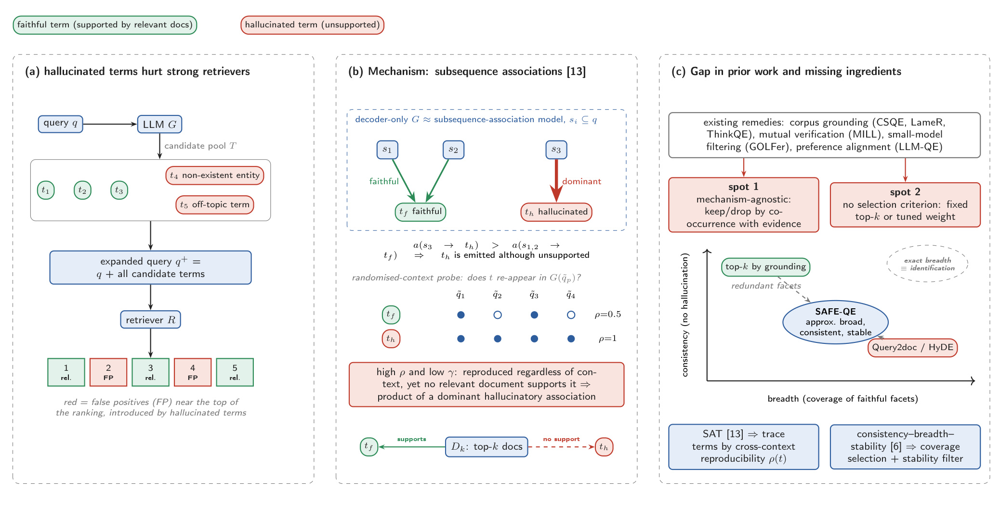
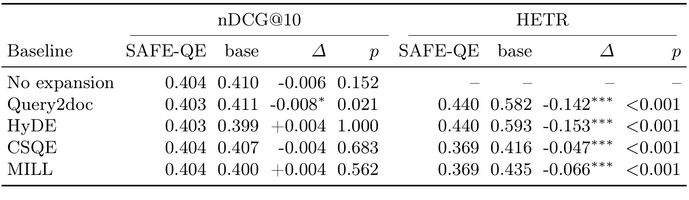
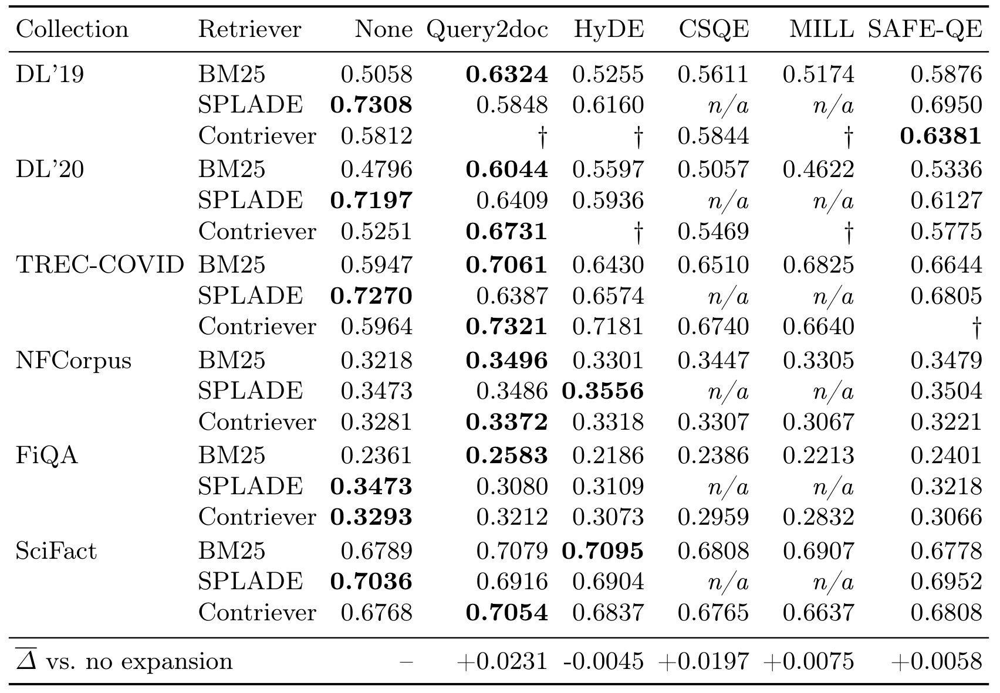
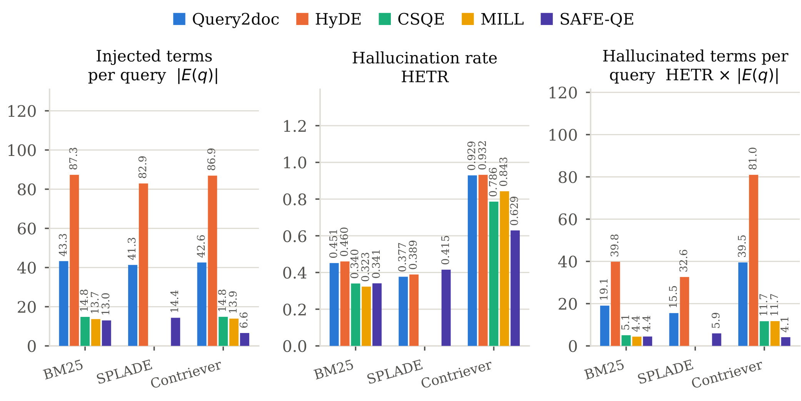
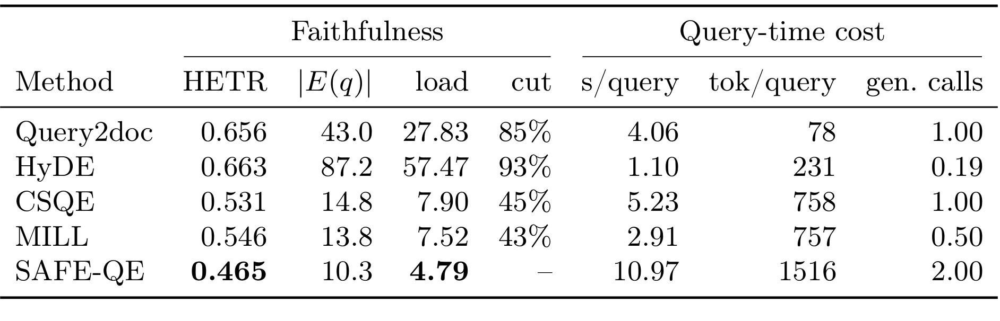
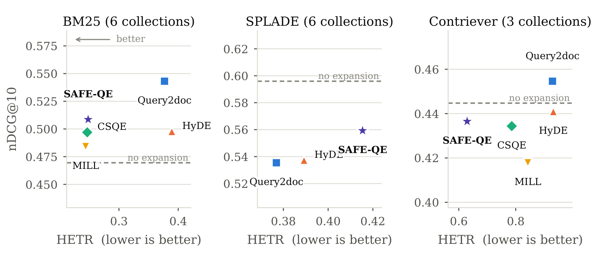
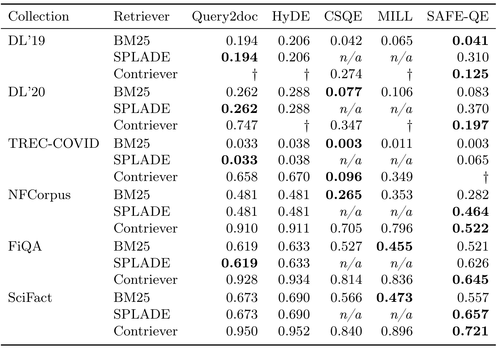
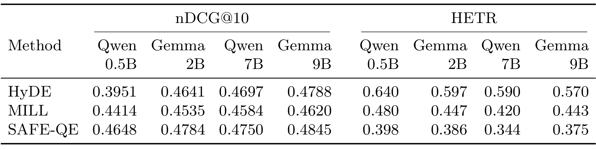

SAFE-QE：用跨上下文探测与覆盖约束过滤查询扩展幻觉
论文 Tracing and Taming Hallucinated Terms via Subsequence-Association Filtering and Breadth-Aware Selection for LLM Query Expansion 由 Amit Kumar Jaiswal、Sagar Uprety、Prayag Tiwari 撰写，第一作者来自印度理工学院（BHU），合作机构为伦敦大学学院与哈尔姆斯塔德大学。论文于2026年10月9日公开，本笔记记录日期为2026年10月14日。论文入口。本轮未核验到独立公开代码仓库，以下结果为原文报告，未做独立复现实验。
大模型生成的查询扩展会注入不存在的实体和偏离主题的词，给排序加入噪声，并可能损害较强检索器；现有过滤还缺少对词为何出现以及保留多少词的系统解释。
1. 背景和问题
查询扩展首先面对的是短查询和文档之间的词汇鸿沟。用户只写出一个对象、用途或问题片段，相关文档却可能用正式术语、别名、解释性短语描述同一件事。传统伪相关反馈从首次检索的文档中补词，大模型则直接写出相关术语或假想文档，试图在没有人工相关性标注的情况下为查询补充语义。这条路线对依赖精确词匹配的检索器很有吸引力：原查询没有出现但相关文档确实包含的词，一旦被加入，就能改变候选集合和排名。然而，生成文本的连贯性和查询词的可用性并不是同一种质量。一个看似专业的实体名称，即使与问题叙述自然衔接，也可能从未在真正相关的文档中出现。
作者聚焦两种实际失效。面对陌生查询，模型可能借熟悉概念补出不存在的实体或不相干术语；面对歧义查询，模型可能把最常见的含义当作唯一含义，使本来应保留的其他检索方向消失。前者增加假阳性，后者损失覆盖。更强的检索器已经能利用原查询找到不错的文档，额外生成的噪声反而可能把不相关文档推到前列。这样，扩展质量不能只由平均排序分数衡量：排序偶然改善，仍可能伴随大量无支持词；幻觉比例降低，仍可能只是因为删掉了大部分有用扩展。论文希望同时审查哪些词有语料依据、留下的词是否覆盖不同方面，以及重复生成时它们是否稳定。
已有方法提供了几种缓解路径。Query2doc把生成的伪文档并入查询；HyDE通过稠密编码器使用假想文档表达查询语义。语料引导方法让模型先看检索结果，CSQE提取首次检索文档中的关键句子，MILL则在生成内容和检索证据之间做交叉验证。作者认为，单靠共现或两边一致，缺少对错误词为何反复出现的解释，也没有充分处理多个可靠词覆盖同一方面的冗余。训练式偏好对齐可以让扩展服务排名，但需要额外训练成本；本研究选择保留现有生成器，在查询时增加过滤与选择，因此不要求重训大模型或检索器。这里的免训练描述的是参数更新边界，不是计算成本边界。
第一条理论线索是子序列联想。原文借鉴既有研究，把解码器模型对输入片段和输出词之间的强关联视为幻觉来源：某个错误关联足够强，就会压过忠实关联，使一个词在不同上下文里仍然出现。SAFE-QE并不读取模型内部权重，也没有逐一定位真实因果子序列，而是通过随机删除、重组查询片段来观察候选词的出现频率。若一个词对上下文变化不敏感，却缺乏首次检索语料的支持，它就更值得怀疑。反过来，一个在多个扰动上下文里重复出现且确实有文档依据的词，不能仅因重复出现而被当作幻觉。这也是为何方法把可重现性与语料支持相乘组合，而没有直接删除高频词。
第二条理论线索是语言生成中的一致性、广度和稳定性。原文讨论的理论针对极限过程：最终只生成有效对象、覆盖目标语言以及输出最终稳定之间有不同难度关系。查询扩展没有无限样本，也不可能枚举所有正确术语。作者因此把“足够广”操作化为覆盖伪相关文档，把“一致”操作化为支持度过阈值，把“稳定”操作化为在有限次采样中反复出现。这些是理论启发下的有限算法设计，不能理解成已证明短查询和有限语料上的无幻觉保证。特别是覆盖文档数量只是一种可计算代理，它并不直接数独立主题；一份长文档可能包含很多主题，而一个重要方面也可能分散在多份文档中。
判断本论文还必须分清生成时可见证据和评测时相关性证据。算法使用检索器返回的前若干篇文档作为伪相关集合，真实相关文档并未在查询时提供；评测则借助有相关性判断的文档，检验扩展词有没有被任何相关文档支持。前者是有噪声的可用上下文，后者是离线评价参照，二者不能互换。一个词在伪相关集合里出现，可能仅来自误召回文档；一个词没被当前相关性标注支持，也可能因为标注覆盖不足而被判得过严。术语级忠实性有助于把噪声从结果分数中拆出来，但它与“这个词在世界上是否真实”仍有区别。
研究问题由此不是追求最长、最丰富的扩展，而是追问有限扩展预算怎样支撑排序。作者希望相较直接生成和语料引导基线显著减少无支持词，同时保持相近的排序质量，并检查这一判断是否依赖检索器强度或生成器大小。读结果时，需要把平均意义下相近、统计检验不显著、逐任务胜负三件事分开。原文摘要“没有可测排序代价”的表述较宽，配对检验表实际上存在显著反例；后文将按表格保留这种差异，而不把作者希望达到的目标当作已经全面成立的事实。
研究中还存在一个容易混淆的关系：被支持的词不一定增加排序收益，无支持词也不一定立即造成排序损失。真实相关文档里常见的背景术语可能与原查询高度冗余，把它加入并不能提升区分能力；一个错词则可能偶然与某份相关文档共现，使离线分数上升。作者因此把忠实性作为独立目标，并没有把支持分数直接当成相关性排序分数。这个区分让评测从单一检索得分扩展到输入证据质量，但也要求最终判断保留两端表现，不能用较低幻觉率遮住召回下降。
论文的工程目标还限定在已有语料上找证据。对于首次检索完全失败的查询，方法能信任的支持来源会很差，覆盖选择甚至可能精确覆盖一组错误文档。若不相关但热门的意义占据前列，词级过滤可能进一步固定这个意义，这正是歧义查询里需要额外主题标注或切片检验的原因。
2. 方法
2.1 语料条件下的跨上下文可重现性
方法的输入是原始查询、目标语料、首次检索器以及一个开放指令模型。模型按Query2doc或思维链式提示生成多次候选，词、短语或伪文档中的显著片段共同形成候选池。首次检索器则只读原始查询，输出伪相关文档集合，避免先用尚未核验的词定义支持证据。采样频率记录某个候选出现于多少次完整查询生成，随机上下文探测记录它在扰动提示中又出现多少次，两者来自不同实验条件，不能把一种频率当作另一种频率。
符号解释：$t$是候选词或短语，$G$是生成器，$q$是原查询，$N$是完整查询的独立采样数，$P$是扰动提示数，$\widetilde q_p$是第$p$个随机删除或重组子序列的提示，$\mathbf{1}$是条件成立时取一的指示函数。前项是对原意图的重复采样稳定性，后项是跨改变上下文的可重现性；原文式（1）正式定义后项，前项按文字定义写出等价计数表达。
符号解释：$D_k$是首次检索得到的前$k$篇伪相关文档，$\operatorname{sup}(t,d)\in[0,1]$是词与文档的支持分数，$\gamma$取最佳文档支持，$s$是保留分数，$\lambda$控制无支持可重现项的惩罚，$\mu$控制重复采样稳定性的奖励，两者均非负。稀疏设置用词汇出现作为支持依据，稠密设置用词向量与文档句子向量的最大余弦相似度。支持分数的实现影响阈值含义，余弦近似语义并不自动提供逻辑蕴含证明。
核心作用在中间的联合惩罚项。语料支持高时，不支持部分接近零，即使词在扰动上下文中重复出现，也不会受到大惩罚；语料支持低时，同样的重复出现会放大扣分。单纯稳定不再总是好事，跨意图扰动仍固执出现可能说明关联过强。这是一种可观测信号解释，尚不是每个错误词生成原因的因果鉴定。只有有限提示下的频率，没有被观察到的其他提示也可能改变判断；随机重组若破坏了原始意图，某些正确通用术语也可能维持高频，因此与支持度联合使用十分关键。

图1的左栏说明错误词如何进入检索：模型给出候选池后把所有词加入查询，排名前部出现红色假阳性文档。这里红色标记是机制示意，不是某个真实查询的统计结果；图中没有证明强检索器必然更易受损，实际效果仍需后面的逐检索器实验。中栏把忠实词与幻觉词对应的输入片段关联画成两类箭头，表达作者借用的子序列联想机制。随机扰动后的四次探测里，忠实词只在部分提示出现，示意幻觉词却始终出现；再接上文档是否支持的对比，就得到“高可重现、低支持更可疑”的联合判断。读图时不能只看出现频率，因为一个真实领域术语也可能对提示变化不敏感。
右栏连接另外两个设计问题：只按语料支持排序，候选可能重复覆盖相同方面；无限追求全部正确扩展，则接近识别整个有效语言的要求。图中把SAFE-QE放在近似广、保持一致、通过稳定检查的位置，是目标与构造方式的示意，不能拿这一位置证明最终幻觉率为零。实际候选池受生成器覆盖能力约束，文档支持受首次检索误差约束，稳定性受有限采样约束。因而这张图把三个模块之间的关系交代得很清楚，却没有替代阈值消融、误判案例或形式证明。原文并未提供组件消融，后续需要单独测量可重现惩罚究竟比普通语料过滤多带来多少收益。
图里的输入片段、输出词和文档支持三个层次也对应三种可观测误差：提示扰动会改变意图，生成会漏掉正确候选，检索会选错证据。联合分数降低某类错误的机会，并不消除这些层次之间的依赖。
2.2 带一致性约束的覆盖选择
保留分数给出单词可靠性的排序，但词之间可能高度冗余。作者先用支持阈值筛出可选候选，再为每个词构建它支持的文档集合。一个词若覆盖已被其他词覆盖的文档，新增价值较低；一个可靠词若能覆盖尚未涵盖的文档，边际价值较高。这种覆盖定义让选择关注组合效果，而非机械地取最高分的若干词。需要强调，覆盖对象是伪相关文档，不是人工标注主题集合，也不是模型未见过的真实相关文档。
符号解释：$T$是全部候选池，$T_g$是通过整体语料支持约束的候选子集，$\tau$是单文档进入覆盖集合的支持阈值，$\tau_g$是候选进入允许集合的最佳支持阈值。二者作用不同，一个定义覆盖关系，一个决定可行性；调高后者可以缩小候选，但不能保证被覆盖文档本身相关。
符号解释：$S$是待选择的词集合，$B$是最多保留的词数预算，$\beta$权衡文档覆盖与保留分数总和，$T^\star$是约束优化的输出。第一项对覆盖文档去重计数，第二项是词分数的模块化加和；原文式（3）采用贪心方式近似求解，不保证枚举得到全局最优词集合。
覆盖函数具有边际收益递减性质，加上模块化分数后仍可保持子模结构，但子模不等于单调，也不等于无条件具有经典近似界。原文声称贪心达到$1-1/e$保证，需要目标为适当的非负单调子模函数及相应基数约束等前提。式（2）的保留分数可能为负：一个刚过支持门槛却跨上下文高度可重现的词仍可能受到较大惩罚。如果负模块化项使边际收益变负，经典单调情形的保证就不能直接套用；只有额外确保可行域上所需单调性，例如适当的非负分数条件，才能援引那条结果。论文没有为全部参数给出这一检查，也没有证明随后的稳定过滤保持同一覆盖保证。
这样的限制不会使选择思路失去实用价值，却决定如何解读“有原则”。它提供一个明确的可优化目标，可以追踪预算、覆盖和可靠性之间的权衡；它没有把随机生成、支持判别、贪心近似三类误差一并消除。即使覆盖了全部伪相关文档，真正的查询方面仍可能遗漏，因为该方面未被首次检索找回，或候选池里没有对应词。要评估广度代理是否合适，复现时应同时统计覆盖文档增加与真实召回增加，而非只报告目标函数上升。
2.3 稳定性过滤与查询扩展
优化输出还经过一次完整查询采样频率检查。出现次数太少的候选被删去，最终集合才用于构造扩展查询。顺序很重要：词先占据选择预算、贡献覆盖，随后才可能被移除；原文算法没有在删除后重填预算或重新优化。因此，最终词集可能比最初选择的更小，覆盖也可能下降。这里的稳定是有限采样频率达标，并非极限理论里输出从某时起永不改变，也没有保证另一轮随机采样给出完全相同的词集。
符号解释：$\theta$是稳定性阈值，$T_{\mathrm{final}}$是最终保留词集，$q^+$是扩展查询，$\alpha$是原始查询与扩展词融合的权重。该表达按原文算法1的最后两步写出；稀疏检索采用类似RM3的带权扩展，稠密检索把词追加到查询后再编码，融合形式随检索器变化。
从输入到输出，整条流程都发生在推理阶段：多次生成候选、做扰动提示生成、首次检索、支持度计算、贪心选择、频率过滤、最终检索。没有新训练目标，也没有需要反向传播的新增参数。检索器无关意味着这套外围处理可接不同检索器，不意味着同一阈值在三类检索器上有同样校准效果。各检索器形成不同伪相关集合，稀疏词匹配和稠密余弦支持的统计范围也不同，最终可靠性与成本都要分别评估。所谓轻量分数只是分数形式简单，不能据此省略前面的重复生成代价。
3. 实验结果
论文选用六个集合：TREC Deep Learning 2019与2020分别有43和54个查询，BEIR中的TREC-COVID、NFCorpus、FiQA-2018和SciFact分别有50、323、648和300个查询。首次检索器为BM25、学习稀疏模型SPLADE以及稠密模型Contriever。主表使用Gemma-2-9B生成器，规模比较增加Qwen2.5-0.5B、Gemma-2-2B和Qwen2.5-7B。原文借助Pyserini预构建索引进行检索，排序指标为nDCG@10；显著性检验在每查询分数上配对，跨基线做Bonferroni校正。下面的数字是原文的报告口径，缺失单元没有独立补算。
忠实性评测使用人工判断相关的文档，而非直接把首次检索的前列当真值。对于加入扩展查询但不在原查询中的词，评测器用实体和数字的精确或近词匹配、短语蕴含检查判断是否被相关文档支持。作者没有在正文充分列出所有验证器误差、术语归一化和标注覆盖细节，因此这个指标应理解成指定验证流程下的无支持率。
符号解释：$Q$是评测查询集合，$E(q)$是新增扩展词集合，$\operatorname{Rel}(q)$是被判断相关的文档集合，分子是这些文档均不支持的新增词数。该式是原文式（4）的每查询比例再平均；没有扩展词时分母为零，需要按原文说明排除无扩展情形，不能随意记为零率并奖励完全不扩展的方法。
符号解释：$\operatorname{HETR}(q)$是单查询的无支持比例，$|E(q)|$是该查询注入词数，乘积等于该查询无支持词的绝对数量，$\mathbb{E}_q$表示在查询上的期望或平均。原文式（5）的负载回答检索器每次实际收到多少噪声词，与比例回答的“扩展词中有多少不可靠”不同。一般不能把两个分别平均过的量相乘替代逐查询乘积的平均。
3.1 配对检验与排序差异

表1最值得保留的是Query2doc这一行。SAFE-QE的nDCG@10为0.403，Query2doc为0.411，差值为负0.008，校正后概率值为0.021，达到表格自己的显著性门槛。因此摘要和该表caption“与所有生成式基线统计不可区分”的统括描述不成立，正文后面其实也承认这个显著差距。差距在数值上较小，可以讨论实践影响，但不能因为小就说统计无差异，也不能把nDCG的差换算成十分之一排名位置，因折损、相关性等级和归一化使指标不具备这种线性对应。准确结论应是：相对Query2doc出现小幅且显著的排序损失，其他若干基线未检出显著差异。
对HyDE、CSQE和MILL，差值分别为正0.004、负0.004、正0.004，概率值分别为1.000、0.683、0.562；相对无扩展为负0.006、概率值0.152。这里没有显著差异不等于证明两种方法等效，因为论文并未做带明确容许界的等效性或非劣检验。右半表则给出忠实性显著改善：相较Query2doc和HyDE的HETR差值为负0.142和负0.153，相较CSQE和MILL为负0.047和负0.066，概率值均小于0.001。这为减少无支持扩展提供直接证据，但支持的聚合范围是四个BEIR集合的配对样本，不是全部六集合的所有条件。
还要注意SAFE-QE列没有对所有行保持一个相同数字：生成式对比HETR为0.440，语料引导对比为0.369。由于不同方法存在未扩展和缺失条件，应把它们视为相应可比样本上的配对结果，不宜把某一列当成统一总平均，更不能把这些不同数字任意挑选来计算全局优势。表1最可靠的价值在于对每一对方法分别保留差值、样本口径和校正概率值，防止平均效果掩盖真实的排序取舍。
配对概率值表达的是在对应查询样本上观察到差异的证据强度，不是算法胜出的概率，也不是上线收益的置信度。六个集合主题与查询数不同，结果外推仍需匹配业务场景。
3.2 六个集合三种检索器

表2显示BM25最有扩展空间，却不是SAFE-QE普遍获胜。DL19从无扩展0.5058提升到0.5876，DL20从0.4796到0.5336，TREC-COVID从0.5947到0.6644；这些提升说明保留少量有支持词仍能弥补原始词匹配不足。然而相应Query2doc分别达到0.6324、0.6044、0.7061，排名分数更高。NFCorpus上SAFE-QE为0.3479，接近Query2doc的0.3496；FiQA上只从0.2361提升到0.2401，而SciFact从0.6789轻微下降到0.6778。因而BM25证据支持“很多条件有所帮助并且减少噪声”，不支持“比无过滤生成更准确”。
SPLADE的原始表现强，增加扩展大多退化。DL19从0.7308降到0.6950，DL20从0.7197降到0.6127，TREC-COVID从0.7270降到0.6805，FiQA从0.3473降到0.3218，SciFact从0.7036降到0.6952；NFCorpus则从0.3473微增到0.3504，并非所有条件都下降。在DL19与TREC-COVID，过滤后确实比Query2doc退化小；但DL20的SAFE-QE又低于Query2doc的0.6409，因此不能把“减轻退化”写成每个任务上的统一幅度。CSQE与MILL在这些条件没有实际注入词，表中标为不适用，原文把它们从聚合中排除，不能拿空白当成算法失败分数。
Contriever结果同样有条件依赖：DL19的SAFE-QE从0.5812升到0.6381，DL20从0.5251升到0.5775；NFCorpus从0.3281降到0.3221，FiQA从0.3293降到0.3066，SciFact从0.6768略升到0.6808，TREC-COVID的SAFE-QE单元缺失。表底的平均增益为SAFE-QE正0.0058、Query2doc正0.0231等，但每种方法覆盖的有效单元不尽相同，不能仅凭这一行做统一全矩阵排名。缺失标记意味着未进入该比较，并非零效果；论文没有给出一个可把所有缺失值公平补齐的估计方式。
主表也限定了作者结论中“强检索器退化减半”的范围：它可以描述特定聚合对比，却不能替代每个集合的变化。尤其DL20上原查询已达到较高质量，扩展后SAFE-QE比Query2doc更差，说明过滤与预算选择可能连带删掉有用词。相对无扩展的降幅和相对生成式基线的改善必须分别计算；如果把两个基线混用，就会把轻微恢复误写成超越原检索器。对于生产候选召回，选择不扩展、只对弱查询扩展与对所有查询扩展应当作为不同策略比较，当前表没有查询级策略学习或延迟约束下的策略结果。
3.3 比率与绝对负载

图2把三类数量分列，避免只看比例得到相反判断。BM25下SAFE-QE约注入13.0词，无支持率0.341，负载4.4词；CSQE和MILL的无支持率分别为0.340和0.323，因此SAFE-QE不是这一检索器上最干净的比例，但绝对噪声与MILL相近且远低于Query2doc的19.1词、HyDE的39.8词。SPLADE下SAFE-QE注入14.4词，比例0.415高于Query2doc的0.377和HyDE的0.389，但负载只有5.9词，后两者分别15.5和32.6。更少的词抵消了较高的错误比例，这个细节是“幻觉率下降”与“噪声负载下降”不能互换的直接证据。
Contriever下差别更大：Query2doc与HyDE约注入42.6和86.9词，比率0.929和0.932，对应负载39.5和81.0；SAFE-QE约6.6词，比率0.629，负载4.1。它明显减少输入检索器的噪声，但0.629仍意味着这个聚合口径下大部分注入词未获相关文档支持，不能称为无幻觉。三栏来自各自可比条件的聚合，读者也不应直接用图上四舍五入的比例乘平均词数要求严格相等。这里的主要证据是负载与检索器类型的互动，而非把所有可见条形平均后获得一条新的通用结果。
此外，绝对负载降低仍应与新增正确词数量一起看，否则完全删除扩展也能获得零噪声，却失去原先扩展的全部收益。
3.4 生成代价与负载冲突

表3把所有六集合与三检索器聚合，明确写出微观词比例，因此HETR的0.465不同于表1的每查询配对值0.440，也不同于表5的宏平均0.375。不同聚合并非互相否定：每查询平均让短扩展和长扩展查询权重相同，微观比例按注入词数加权，集合宏平均又会让不同查询量的数据集权重趋于相同。原文对所有中间聚合的细节仍不够完整，复现需要保存逐查询词集，才能把每查询、微观和集合宏观计算逐层复核，不能仅凭平均表恢复完整分布。
数字冲突必须直接记录。该表SAFE-QE注入10.3词，HETR为0.465，负载写4.79；摘要、正文和结论却使用4.30，并据此宣称相对Query2doc的27.83下降85%、相对HyDE的57.47下降93%、相对CSQE和MILL下降45%与43%。4.30与4.79的差距不可能只由最后一位四舍五入解释。若按表内4.79计算，相对Query2doc和HyDE约下降82.8%与91.7%，相对CSQE的7.90和MILL的7.52约下降39.4%与36.3%。这组自行计算仅说明表内数字对应的比例，不能取代作者另一口径的结果；缺少逐查询原始产物时，应保留两个值并标注未解决的不一致。
效率方面，SAFE-QE为每查询10.97秒、1516个token，Query2doc为4.06秒、78个token，HyDE为1.10秒、231个token，CSQE为5.23秒、758个token，MILL为2.91秒、757个token。SAFE-QE的计算负担在这里最高，不能因为免训练就称为低延迟。表里生成调用数记2.00，同时caption指出两次采样生成加扰动提示；扰动探测如何计入调用和token需要进一步核实，不能将2.00理解成完整流程只执行两次模型请求。秒数还依赖实现、模型和硬件条件，论文没有给出足够细的吞吐并行拆解让生产服务直接复用。适合研究的候选词过滤，与满足实时搜索延迟预算之间仍有明显距离。
若后续得到原始记录，应先判断4.30究竟对应哪组有效条件，再讨论它是否代表正式总体，而非直接修改表内值。
3.5 忠实性与效果平面

图3横轴越向左越忠实，纵轴越向上排序越好，虚线是无扩展的排序质量。BM25下SAFE-QE在较低HETR同时保有一定排序提升，Query2doc得分更高但幻觉率更高，二者体现真实权衡。Contriever图只聚合三份有五方法共同结果的集合，SAFE-QE往左移动显著，但排序分数低于Query2doc；不能把这张三集合的平面当成所有五个可比Contriever任务或全部六集合结论。样本范围变化是图中数字与其他表不完全相同的重要原因。
SPLADE面板尤其值得重视：所有实际展示的扩展方法低于无扩展虚线，SAFE-QE比Query2doc和HyDE排序好，却在HETR横轴更靠右。首次检索文档的支持信号让更多候选过阈值，并没有同等可靠地过滤无支持词。作者据此提出按检索器校准支持阈值，当前实验仍使用固定设定。图中较优前沿仅相对所画方法和所选聚合成立，无法推出对新检索器的普遍优势，也不能忽视无扩展方案在该检索器上的强基线地位。把未扩展的HETR设成零并画入横轴也不合适，因为它没有扩展词而非证明生成完全忠实。
3.6 逐集合幻觉率

表4揭示聚合背后不同数据领域的差异。TREC-COVID的BM25条件里CSQE和SAFE-QE同为0.003，接近零的无支持率与Query2doc的0.033、HyDE的0.038相比确实更低；DL19的BM25条件里SAFE-QE为0.041，略低于CSQE的0.042，但DL20的SAFE-QE为0.083，高于CSQE的0.077。因此，即使在词汇检索上也不是每一个数据集都由SAFE-QE最低。FiQA的BM25条件里MILL为0.455，SAFE-QE为0.521；SciFact里MILL为0.473，SAFE-QE为0.557，这些反例约束了“比所有语料引导方法更忠实”的说法。
SPLADE的DL19与DL20分别为0.310和0.370，高于不依赖首次检索的Query2doc比例0.194和0.262；TREC-COVID也从生成式的0.033或0.038变成SAFE-QE的0.065。NFCorpus则是SAFE-QE的0.464优于生成式的0.481；FiQA的0.626落在Query2doc0.619和HyDE0.633之间；SciFact的0.657低于二者0.673和0.690。六个条件中“最低”与“有所改善”各有不同计数，不能用两类表述互相代替。固定语料支持阈值不保证更強首次检索器得到更低的术语幻觉率，这是本论文一个有价值的负面观察。
Contriever上可比较的五个SAFE-QE单元分别为0.125、0.197、0.522、0.645、0.721；在同条件语料引导和生成式基线中常见显著更高的比例，例如FiQA里Query2doc0.928、MILL0.836，SciFact里Query2doc0.950、MILL0.896。方向非常清楚，但科学和金融查询仍有较高残余无支持比例，过滤不等于语义校验完成。原文称Query2doc与HyDE注入词集不依赖首次检索器，这一机制描述合理；然而表中Contriever生成式比例和BM25、SPLADE的比例不同，可能涉及不同有效样本或处理设置，正文不足以逐层核实，应保留表格差异并请求评测产物，而不能自行改成检索器间同值。
逐集合表还提醒评测验证器可能具有领域敏感性：金融术语或科学主张仅凭词面出现很难判定完整支持，实体数字的近匹配与短语蕴含也需要不同规则。论文报告总体高精度验证思路，但未给出各领域误判率与人工一致性数据。对SciFact较高残余比例的解释，因此应先核对术语粒度与蕴含失败实例，再把全部无支持归因于生成器真正编造。
3.7 不同生成器规模

表5的SAFE-QE排序分数从Qwen0.5B的0.4648，到Gemma2B的0.4784、Qwen7B的0.4750、Gemma9B的0.4845；相比之下HyDE分别为0.3951、0.4641、0.4697、0.4788。最小模型上的差距最大，支持过滤和选择可以部分降低生成器能力不足的影响。但这并非严格控制规模的同系列缩放实验，Qwen与Gemma的模型家族、训练数据和行为同时改变，不能把全部变化都归因于参数数目，也不能据此预测更大模型一定继续改善。SAFE-QE的排序随规模较平稳是一条观测，不是单调规律。
忠实性方面，SAFE-QE的HETR分别0.398、0.386、0.344、0.375，HyDE为0.640、0.597、0.590、0.570，MILL为0.480、0.447、0.420、0.443。四个生成器条件下SAFE-QE均更低，0.5B的0.398也低于HyDE9B的0.570；这支持小模型加过滤可能比大模型直接扩展更忠实。但这里是跨集合检索器宏平均，不能直接拿0.398与表1配对值计算改进。SAFE-QE在7B的0.344优于9B的0.375也说明忠实性没有随规模单调增强，模型更大与词更可靠不应等同。
这张表不能替代组件消融。它同时使用整套流程，尚未回答去掉跨上下文惩罚、只用支持约束、把贪心改成分数排序、先做稳定过滤等各自会怎样。作者在结论明确承认组件消融未完成，故当前证据能评价整体系统及生成器变化，不能把总体收益精确分配给子序列理论启发、覆盖选择或稳定性中的某一个。对理论机制的实证检验，需要保持候选池和预算一致再拆模块，而不是看到小模型结果不错就断言该机制已获独立验证。
规模结果还缺少对应的秒数与token曲线。较小模型可能降低单次生成开销，但多次扰动和支持计算仍存在，不能由参数少直接推出总成本足够低。若把轻模型视为生产候选，需要在相同批处理和同等扩展预算下比较整条链路，而不只是最终排序指标。
4. 总结
SAFE-QE的研究价值是把查询扩展从整段生成文本拆成可以逐词审查的对象，并联合使用上下文扰动可重现性、首次检索语料支持、覆盖选择和重复采样稳定性。HETR与扩展词数、绝对负载同时报告，也让“生成更可信”不再与“加入更少词”混为一谈。当前结果最稳健的方向是明显缩小无支持词的输入规模；排序端则体现有条件的权衡，BM25仍可受益，SPLADE多数条件退化，稠密检索里的忠实性改善不等于排序普遍提升。
对于推荐与搜索召回研究，这种词级诊断可用于审查由大模型生成的检索关键词或商品实体扩展，先确认新词有可用内容支持，再讨论对候选覆盖的贡献。但论文只测试文本检索集合，没有用户历史、点击目标、商品库存和实时性约束，不能直接推出推荐转化收益。对大模型应用，重复生成一致也不必然意味着真：稳定的错误联想反而可能最顽固，必须联合外部证据。这里的支持来源是有噪声的伪相关语料，不宜把经过过滤的输入称为已验证事实并继续放大到回答中。
主要局限有四组。第一，伪相关集合并非真实相关性，支持阈值依赖检索器，SPLADE反例说明校准仍不充分；术语验证器与标注覆盖也可能影响HETR。第二，组件消融缺失，尚不能证明跨上下文惩罚相较普通支持过滤的独立贡献，更没有有限样本的无幻觉证明。第三，摘要的普遍无排序代价与Query2doc配对检验显著负差异冲突，负载4.30与表内4.79也未统一，完整原始产物是解决这些问题的必要条件。第四，每查询10.97秒及1516token暴露较高推理开销，开放独立代码尚未核验，无法仅凭免训练宣称易于实时上线。
后续应先做三个可检验的工作。其一，获取逐查询词集、相关文档支持判定和有效样本掩码，重新计算每查询平均、词微观比例、集合宏平均及负载，检查不同表的数字冲突能否由口径解释，并保持排序统计检验范围一致。其二，用同一候选池和相同词数预算拆除重现惩罚、覆盖优化、稳定过滤，按陌生实体和歧义查询切片观察误删与误留，尤其比较先过滤再选择是否更好。其三，给BM25、SPLADE、Contriever分别校准支持门槛，测量覆盖、真实召回和延迟，把扰动次数与采样次数作为成本维度，而不是只追求低HETR。
若进一步研究优化保证，还要记录可行候选的分数是否非负、每轮边际收益是否非负，以及稳定过滤后覆盖损失。只有这些条件与算法顺序明确，才能讨论经典贪心近似界如何应用于最终输出。当前论文为扩展质量提供了更透明的测量与选择框架，同时留下可重复性、指标聚合和机制证据的缺口；最有用的下一步是补这些具体证据，再决定这套过滤适合哪些查询与检索器。
这项工作的证据复核也应记录候选词粒度。把多词实体当一个短语，或者拆成多个词，会同时改变扩展足迹、支持率和预算含义；近义词归一化也会改变去重覆盖。若新实验不同实现使用不同切分，负载之间就可能口径不可比。优先公开这一处理流程与单查询样例，将比继续扩大模型规模更能帮助理解为什么一些过滤后词集仍然不忠实。